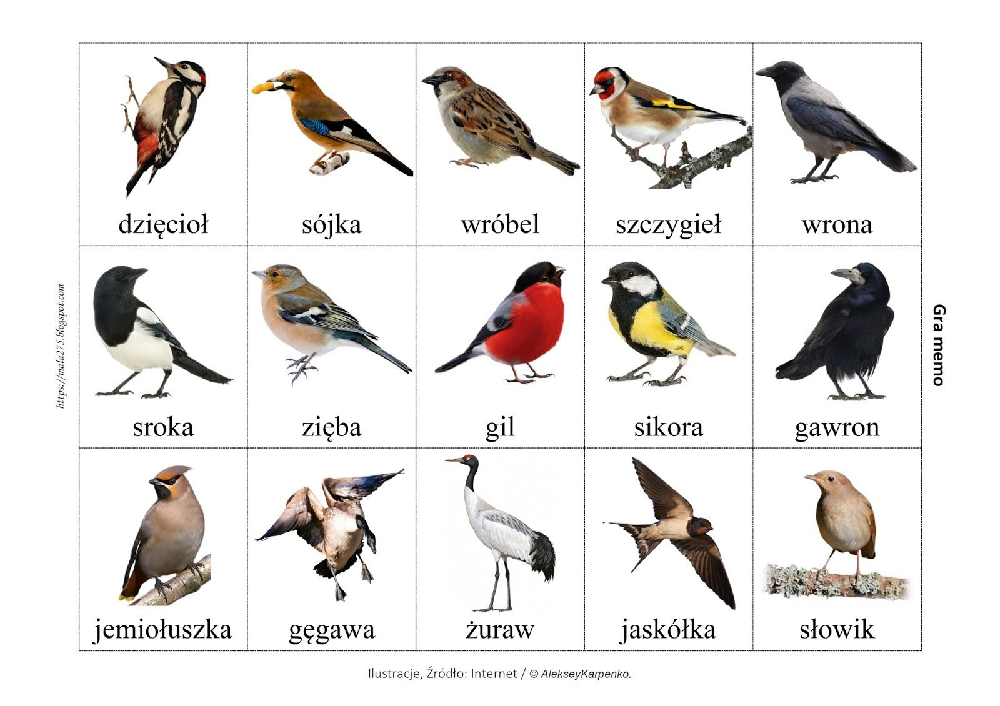
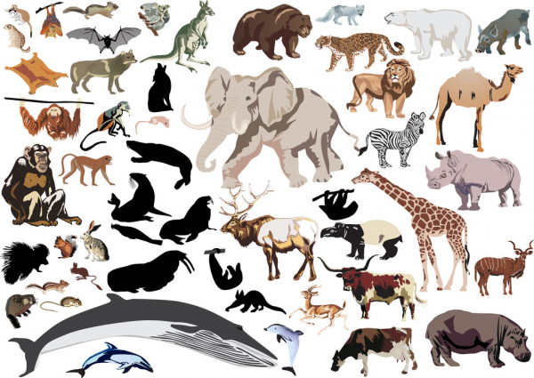
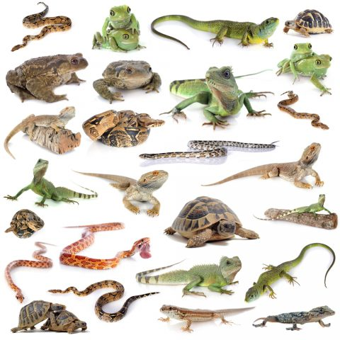
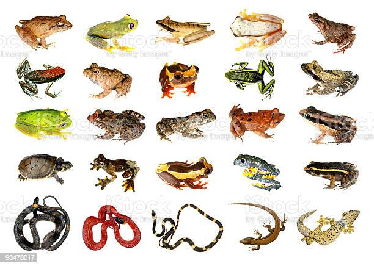
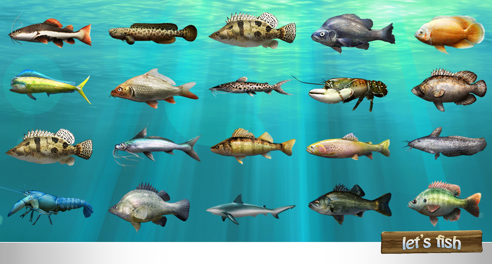

| Ptaki | Ssaki | Gady | Płazy | Ryby |
|---|---|---|---|---|
|
Gromada stałocieplnych zwierząt z podtypu kręgowców. Jest najbardziej zróżnicowaną spośród gromad kręgowców lądowych – istnieje ponad 10 tys. gatunków ptaków, które zamieszkują ekosystemy na całym świecie. Ich wielkość waha się od 5 cm u koliberka hawańskiego do 2,7 m u strusia.
 |
Zwierzęta należące do kręgowców, charakteryzujące się głównie występowaniem gruczołów mlekowych u samic, zazwyczaj obecnością owłosienia (włosy lub futro; silnie zredukowane u gatunków wodnych, jak hipopotamy,) oraz stałocieplnością (potocznie „ciepłokrwistość”). Około 60% ssaków utrzymuje temperaturę w granicach 34–39 °C.
 |
Parafiletyczna grupa zmiennocieplnych owodniowców. Obecnie żyją tylko cztery rzędy gadów, ich pozostałe znane linie ewolucyjne wymarły. Niektóre kopalne gady naczelne, czyli archozaury (takie jak pterozaury i dinozaury), były prawdopodobnie zwierzętami stałocieplnymi.
 |
Gromada zmiennocieplnych kręgowców z grupy czworonogów. Zamieszkują różnorodne siedliska, większość gatunków żyje na lądzie, w gruncie, na drzewach bądź w wodach słodkich.
 |
Tradycyjna nazwa zmiennocieplnych, pierwotnie wodnych kręgowców, oddychających skrzelami i poruszających się za pomocą płetw. Obejmuje bezżuchwowce krągłouste (Cyclostomata) oraz mające szczęki ryby właściwe (Pisces).
 |